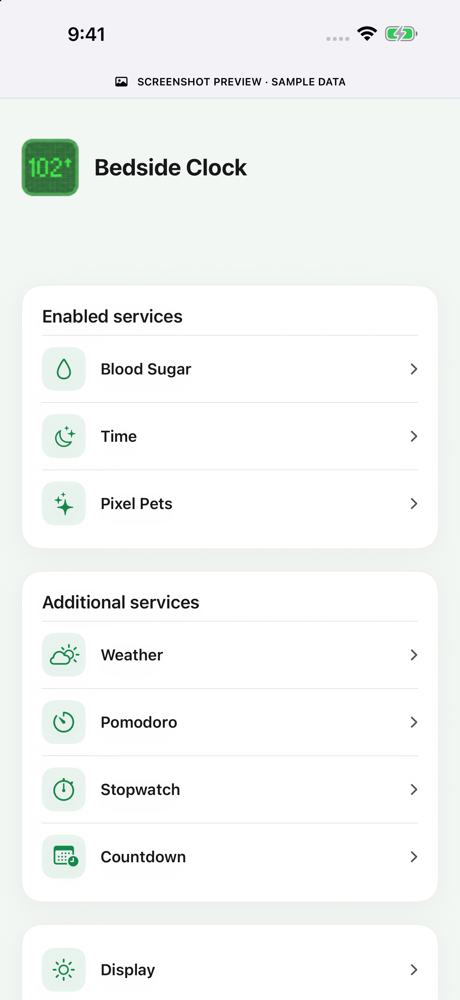
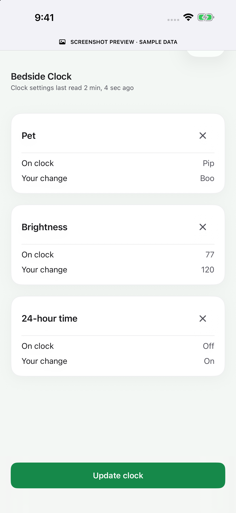
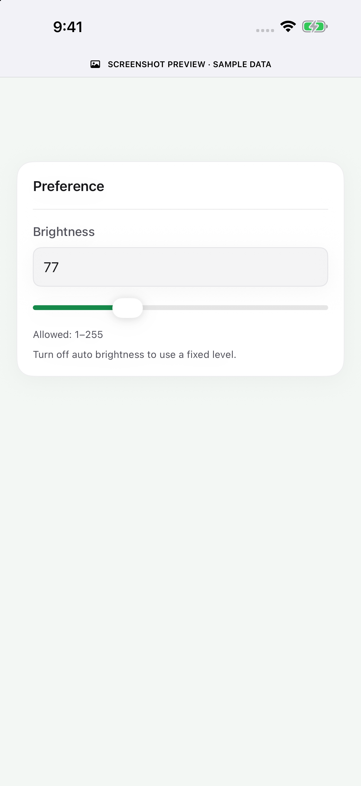

A name for every clock.
Bedside, kitchen or desk: save and name your clocks, then pick the one you want in My Clocks.
The same SugarClock you love.
Now with a little help from your phone.
Pair nearby, make a few changes, and give your clock its own personality.
Keep your attention on your day without looking up an IP address.



The app handles the settings. Your clock gets on with its day.
Bedside, kitchen or desk: save and name your clocks, then pick the one you want in My Clocks.
After loading a clock once, keep editing its saved settings while disconnected. Review the changes, then tap Update clock.
Choose Pip, Boo, Mochi, Sprout, Pebble, Inky or Maple. All seven are available on compatible firmware.
Use the app for setup and everyday changes. Your clock keeps fetching readings over its own Wi-Fi.
Start with a Ulanzi TC001 running Bluetooth-capable SugarClock firmware. Existing clocks may need a supported OTA or USB upgrade before the app can discover them.
Check compatibilityHold only the middle button for three seconds, then release. Choose the clock in Add clock and enter its fresh six-digit code when iOS asks.
Configure Wi-Fi and your supported glucose source. Tune brightness, time, display preferences and clock alerts, then choose your Pixel Pet. Existing saved credentials can stay unchanged.
Make changes across screens, remove any you don't want, and tap Update clock. Keep the app open while it connects and confirms the save. The clock continues on its own when you're done.


The app is currently in testing. There is no public App Store download yet. iOS/iPadOS 17 or later and a compatible clock are required; hardware is sold separately.
No. The app uses foreground Bluetooth sessions for configuration. Your clock uses its own Wi-Fi to fetch readings, and its display and configured alerts keep running when the app is closed. Provider and network availability still matter.
After a clock has loaded once, cached settings remain editable. Review the pending edits and tap Update clock when ready. The app can wait for a foreground connection and confirms the saved result. Brief interruptions can happen during the clock's network work; an unconfirmed update still needs verification.
Yes. The app is an additional way to manage your clock. Keep the browser setup and Mac installer available for recovery, initial firmware installation and settings not yet exposed in the app.
The app stores clock names and identifiers locally. Settings snapshots and pending edits use device-only Keychain storage, including new secrets you explicitly choose to replace until confirmation or discard. The clock separately connects to your selected provider and the SugarClock fleet service.
Current fleet firmware reports a pseudonymous installation ID, operational state and enabled-feature categories; it has no reporting opt-out. Fleet reports omit glucose readings, credentials and Wi-Fi names. See the installation reporting notice for details. The app does not measure glucose or replace your primary glucose device.
Explore the app, get your clock ready, and keep making SugarClock yours.
Use your CGM receiver, app or meter and your care team's guidance for medical decisions.